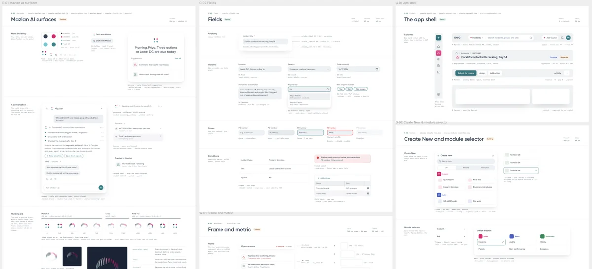

Groom Lake
Overhauling a flagship to compete in the AI era

- Problem
- Legacy enterprise UI was losing sales, hurting adoption, and made no room for AI enhancements.
- What I did
- I led a down-to-the-studs redesign of our flagship EHS application: an agent-first design system, overhauled core features, and a carefully constructed interface. Embracing AI tooling made it all possible.
- Outcome
- Deal loss related to UX reduced from 14% to 2%
- NPS increased from −53 to +71
- WAUs increased from ~3,200 to ~11,000
EHS Enterprise is Ideagen’s flagship product for large organizations, delivering safety, quality, and risk solutions across a spectrum of regulated industries. The app allows customers to do things like operate an incident management program, conduct recurring audits of their manufacturing processes, and manage job safety for thousands of workers at hazardous work sites.
The product was powerful, but stiff, awkward, and cumbersome for users. It was not built for the AI era, and needed to be reconsidered in light of it. Its accompanying mobile app was an underutilized orphan, and shared little with the desktop experience.
Add this all up and we reached a point in mid-2026 where we were losing sales. Reports were coming back about deals lost with specific concerns about how the product showed to potential buyers. Stale. Clumsy. Too complicated.
Momentum had been building for over a year to overhaul the UX and the time had come. With revenue on the line I was asked to lead the redesign.
EHS Enterprise had taken a one-size-fits-all approach out of necessity. The interface was intentionally standardized after a long history of bespoke customizations had led to projects running late and over budget. But the resulting sameness poorly represented what the software could do. A generic default landing page, meant to give all customers a reasonable orientation to the system, had left most feeling ignored and underserved.
AI promised to let us deliver on our early dreams of personalization. What if the first thing a user sees when they log in felt like walking into their own garage, with all their tools laid out in the right place, ready to use? I worked with our Product and Sales teams to create user archetypes I designed against, creating informed default workspace components. I created a layout system that deferred to users’ preferences, letting them rearrange and recompose their workspace at will. Then I went a step further.
In the past, we had offered a set of pre-built components that people could use to build a dashboard. Their saved searches could be jammed into various formats and wedged into a layout slot. It got the job done, but was clunky and required real knowledge of the system. I wanted to make getting the information and actions an individual needs pulled together in front of them as easy as asking for it. I designed an AI system for generating workspace components based on a user’s intent. Elevated one level, the same system allowed users to generate an entire workspace. I developed a visual grammar for components and a taxonomy of user intents so the agent could compose the most legible form of the data.
It was well received, but a good example of a case where the highest-end tool is not necessarily the one most people need. This system was designed for people who oversee work and manage activities across a facility or organization. The average boots-on-the-ground worker didn’t need it. They need to get in, log something or find an assignment, and get out. Data visualizations and customizable views aren’t valuable. Time and attention are. I had already set role-based rules in the system, so for users at that tier, we set the final product up so that admins create the workspace for them, and workers simply use it.
The bread and butter of the application is workers creating records. Someone gets burned; file an injury report. A shipment fails purity testing; log a non-conformance. A piece coming off an assembly line shows a defect; kick off a root cause investigation and start a corrective action. Day in and day out, this is what our customers do in Enterprise.
The exact details and the exact workflow are unique to the implementation. Organizations often have their own way of doing things and a lexicon that’s anything but standard.
The issue is that at the scale of a national lab or a global manufacturing firm, there may be dozens or hundreds of different workflows in the system. How is a worker supposed to know which one fits the situation? In some cases, the proper course of action is obvious and routine. In others, anything but.
AI has proven a fantastic triage partner. I designed a new way of creating records in the product, guided by Mazlan, Ideagen’s AI. Users describe the events surrounding them, or the problem they’re trying to solve, and Mazlan directs them to the appropriate workflow. As the user adds information to the conversation, Mazlan transposes it to the corresponding fields in the form. If a user isn’t sure how to proceed, Mazlan knows what the steps are and who the next step is assigned to. If a user already knows what they need to do and wants to just get to work, that path remains available to them. AI assists when called on, and defers otherwise.
This operating model was particularly exciting in the mobile world. Enterprise users are often in the field, on shop floors, or in remote locations. They’re people who work on their feet and with their hands. A really great experience with fluid image and video capture, speech-to-text data input, and geolocation had never made it to the product. Mazlan, in Enterprise’s mobile version, allows users to do all that and more, doing work and recording information from unknown locations, wearing PPE, in the wind and the rain. The wrinkle here, which is beyond the scope of this case study, is providing an exceptional user experience in low- or no-connectivity environments.

When I began this project, Ideagen was at an inflection point. The old, Figma-based design system had been retired, and a new AI-first design system initiative had been announced. That system, however, was little more than a twinkle in someone’s eye. My job was to shed our old skin and design a product that would earn customers’ trust and win business.
Our timeline was tight. I was given a month before the first presentation to leadership. Designing a new experience with Figma would’ve been impossible. There was too much ground to cover. I’d been using Claude for feature work for a few months and had gotten my sea legs. The two designers I had working for me, however, were still spending most of their time in the canvas.
I showed them what was possible with Claude and got them excited. I coached them through the first few steps as we set up Git, started prompting, and figured out how to work together. Within the first week, they were designing small components and flows in code. By our first leadership review, they were prompting and refining richly detailed journeys through the new UX.
I believed this project could act as a model for the company and designed Praxis to be agent-first from the outset. I expected my teammates to point their Claudes at it and let her rip, not spend hours combing through a dense documentation site. PRAXIS-FOR-AGENTS.md is the whole reference in one markdown file, generated from the components as defined to eliminate drift. Tokens come from src/ at build, meaning agents get the values the browser actually renders. The system anticipates and documents circumstances where an agent might fail, and tries to prevent them.
Working with AI also helped me bake in accessibility compliance. I wrote accessibility-focused rules into claude.md and ran automated audits periodically through the design process. When the prototype was nearly complete, I invited two designers who hadn’t been involved to red-team the work for WCAG violations, and they came up nearly empty-handed. Accessibility can be seen as idealistic or nice-to-have, but when pursuing federal contracts it’s a hard requirement, and we had the opportunity to make accessibility a priority from the very beginning.
Praxis was immediately used to revamp 4 other products and, over the following months, served as the foundation for Nexus, which became Ideagen’s official product design system.
This project wasn’t just about AI. My mandate was to make the product the best it could be, which included a close look at existing features. I couldn’t sink our efforts into everything. I chose filters as a top candidate for redesign. They were a vestige of the time before I was hired, when well-intentioned people were doing their best. The way they worked was politely called “quirky”, which is to say they were bizarre and had caused plenty of headaches over the years. Filtering is a utility feature, though, and never seemed to make it into the spotlight. I knew this was a chance to make a real, foundational improvement to one of the app’s most-used parts.
It’s common sense to say that users will find your software easy to use if it works the way other software they already use works. Easier said than done, perhaps, but it’s reasonable. I looked to examples from e-commerce. Clothes and shoes and cars. I created an elegant, streamlined experience that preserved all of the power-user features from the existing system. The new approach scored exceptionally well in testing. Our robust search tools have gone from an opaque mess we struggled to explain to an understandable tool we can sell.
But AI has come for search, too. It would feel incomplete to stop short of imagining how AI-first search would work in Enterprise. It was a tricky proposition. A significant portion of our existing audience were late-career professionals. I’d learned first-hand that they were less than receptive to change, or new ways of doing things. Many times I had come up with a solution to a strongly signaled UX problem only to find that users didn’t care that it was better. They hated that it was different.
I had to find a middle path. I needed to give new and future users the ability to construct arbitrarily complex search queries with natural language. I also needed to let legacy customers keep stringing filters together with a traditional UI. I needed to improve the experience for customers today and give the product room to evolve gracefully.
I landed on…
Copy to come.
Copy to come.